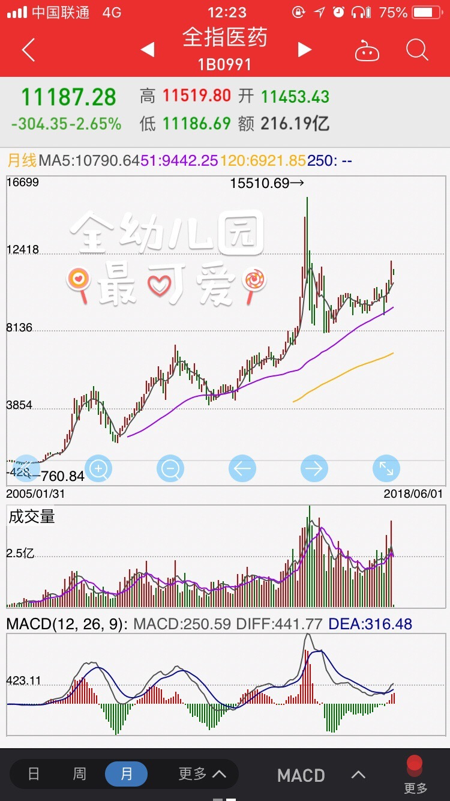

回复@Lily-invest:20倍，我觉得你很难见到。过去14年中，低于30倍的时候只有11个月，其中9个月出现在2004-2005。过去13年只有两个月低于30倍。700点最惨的时候也有25倍。//@Lily-invest:期待医药20倍的那天🙏🙏跟着益达准没错了@ETF拯救世界:我的最爱。一定要活到它30万点那天…… 
回复@O_Zhong_O:全指医药你我这一生能见到30万点，甚至40万点。//@O_Zhong_O:E大，下去以后再也上不来的概率是不是也存在？//@ETF拯救世界:回复@慢城畔海:是的。电梯肯定是让人郁闷。但这个事情我说过好多次了。如果真的电梯下去，我们会继续买。然后，再次回到这里的时候，我们会赚的多很多。@ETF拯救世界:感觉不会再爱了。
回复@老高GG:老外：“我没进”//@老高GG:大盘果然熊啊 全部空头排列 让你MSCI进来 先教教老外做人//@ETF拯救世界:回复@慢城畔海:是的。电梯肯定是让人郁闷。但这个事情我说过好多次了。如果真的电梯下去，我们会继续买。然后，再次回到这里的时候，我们会赚的多很多。@ETF拯救世界:感觉不会再爱了。
回复@慢城畔海:是的。电梯肯定是让人郁闷。但这个事情我说过好多次了。如果真的电梯下去，我们会继续买。然后，再次回到这里的时候，我们会赚的多很多。//@慢城畔海:想卖的都是害怕坐电梯的。//@ETF拯救世界:回复@mmmm123456987:问题是医药现在比2013年还便宜，让我卖，我实在下不了手啊！@ETF拯救世界:感觉不会再爱了。
回复@mmmm123456987:问题是医药现在比2013年还便宜，让我卖，我实在下不了手啊！//@mmmm123456987:要卖了吗//@ETF拯救世界:回复@急速火狐:是啊，连续两天高位放大量，反弹无力。//@急速火狐:感觉医药不太好了。@ETF拯救世界:感觉不会再爱了。